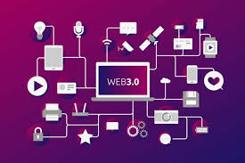
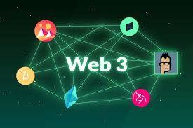

Que es la Web 3.0?
Surgió como respuesta al control de las grandes empresas sobre nuestros datos. El objetivo es que internet sea descentralizado, es decir, que no dependa de un solo dueño, sino de los propios usuarios.

Caracteristicas de la Web 3.0
- Descentralización (Blockchain): La información no está en un solo servidor central, sino repartida en miles de computadoras, lo que la hace más segura y privada.
- Tú eres el dueño: A través de carteras digitales (wallets), tú controlas tu identidad y tus activos (como tokens o NFTs) sin pedir permiso a un banco o a una red social.
- Sin intermediarios: Las transacciones y contratos se hacen directamente entre personas (P2P) gracias a programas que se ejecutan solos.
- Web Semántica: Las máquinas ahora "entienden" el significado de las palabras y el contexto, no solo buscan letras sueltas.
